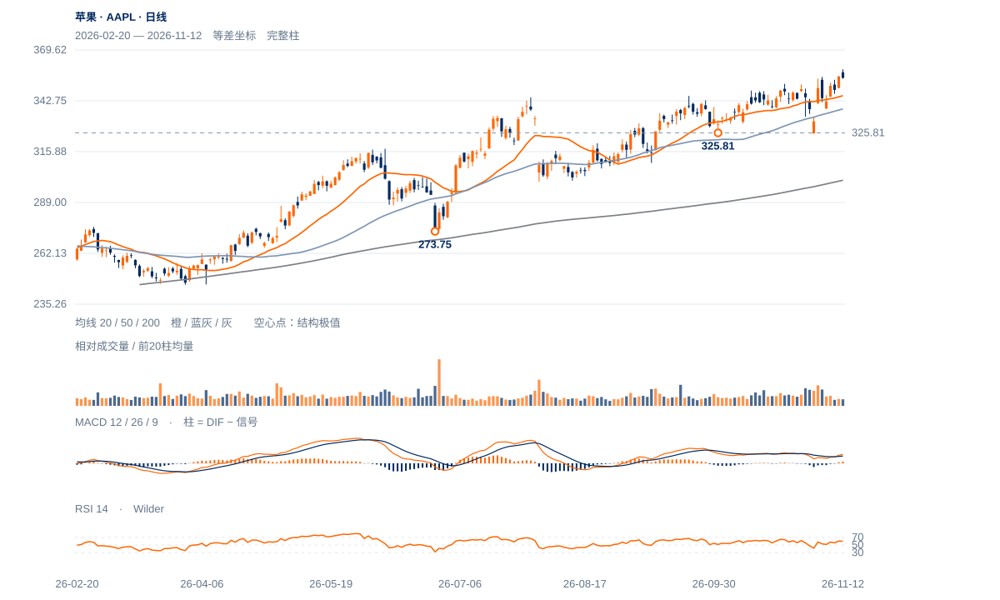

原规则本日尚未通过
11日收355.63首次高于355.38，12日盘中359.37却收354.88；连续两日收盘过滤未成立。355.38不改成359.37来重写此前规则。
未来1—5日偏向高位整理，仍有再试上方的条件；1—3周结构优于多数科技股，但须先完成355.38的保持，再讨论更强延续。

查看大图 ↗11日收355.63首次高于355.38，12日盘中359.37却收354.88；连续两日收盘过滤未成立。355.38不改成359.37来重写此前规则。
12日收盘位置9.5%、量比0.65，11日上涨量比也仅0.70；20日OBV方向余额为负，提示突破需求仍需后续证据。
收盘高于20/50/200日线345.51/338.48/300.76，完整周RSI63.54；20日绝对涨3.77%，相对纳指比值升9.28%，当前不是全面走弱。
低量回落也可能只是强势消化，且345.34旧支持仍在；若355.38上方保持并越过359.37，上冲受阻判断会迅速降权。